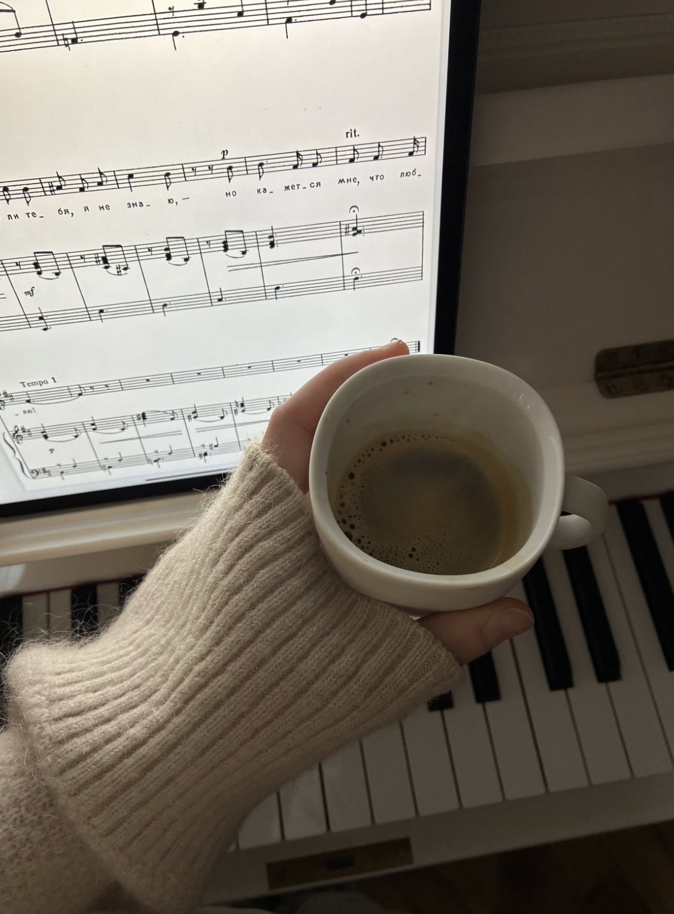

ENOCH MUSIC ACADEMYENOCH NOTE — MIND CARE

Mind Care · For Exam
나를 아는 입시생은,
덜 흔들립니다
입시 스트레스를 다루는 법
입시 스트레스01 / 08
ENOCH MUSIC ACADEMYIT'S NORMAL
It's Normal
입시 스트레스는,
이상한 게 아닙니다
01시험한 번의 무대로 정해진다는 부담
02비교옆 연습실 소리, SNS 속 다른 수험생
03기다림결과를 알 수 없는 시간
없애려 애쓰기보다, 풀어 주는 법을 아는 게 중요해요.
입시 스트레스02 / 08
ENOCH MUSIC ACADEMYKNOW YOURSELF
Know Yourself
나를 잘 알수록,
덜 비교합니다
남의 기준으로 나를 재면 끝이 없거든요.
내 기준이 생기면, 흔들림이 줄어듭니다.
나에 대해 적어 보기
① 내 소리의 좋은 점
② 집중이 잘 되는 시간
③ 지칠 때 나타나는 신호
④ 기분이 풀리는 것
입시 스트레스03 / 08
ENOCH MUSIC ACADEMYYOUR OWN WAY
Your Own Way
무엇을 하면 풀리는지,
알고 있나요?
걷기샤워좋아하는 음악친구와 수다그림 그리기짧은 낮잠일기 쓰기방 정리
사람마다 다릅니다. 나에게 맞는 목록 세 개를 미리 만들어 두세요.
지칠 때, 고민하지 않고 꺼낼 수 있도록.
입시 스트레스04 / 08
ENOCH MUSIC ACADEMYBODY & MIND
Body & Mind
몸이 풀리면,
마음도 풀립니다
STRETCH
스트레칭
연습 전후로 목, 어깨,
손목을 천천히 풀어 주기
BREATHE
호흡
들이쉬는 것보다 길게,
천천히 내쉬기
MEDITATE
명상
눈을 감고 5분,
숨에만 집중하기
MOVE
좋아하는 운동
잘하는 것보다,
좋아서 꾸준히 할 수 있는 것
걷기 · 요가 · 수영
입시 스트레스05 / 08
ENOCH MUSIC ACADEMYEAT WELL
EAT WELL
컨디션은,
식탁에서도 만들어집니다
01끼니 거르지 않기
02물 자주 마시기
03오후 늦게는 카페인 줄이기 (잠에 영향을 줍니다)
04자극적인 음식과 늦은 야식 줄이기
05시험 앞두고 처음 먹어 보는 음식 피하기
입시 스트레스06 / 08
ENOCH MUSIC ACADEMYTIME FOR ME
Time for Me
쉬는 시간도,
일정에 넣으세요
MON
TUE
WED
THU
FRI
SAT
SUN
연습
나를 위한
시간
연습 나를 위한 시간
쉬는 건 게으른 게 아니라, 다음 연습을 위한 준비입니다.
연습처럼 시간을 정해 두고, 그 시간만큼은 마음 편히 쉬어 보세요.
입시 스트레스07 / 08
ENOCH MUSIC ACADEMYTHE ENOCH WAY
ENOCH
나를 아는 것에서,
나만의 소리가 시작됩니다.
같은 곡도, 사람마다 다르게 가르칩니다. 입시 과정은 모두 1:1.
시험장에서도 연습한 만큼 연주할 수 있도록,
주기적으로 모의고사를 진행합니다.
에녹실용음악학원 시흥점
경기도 시흥시 은행로 157 2층010 3949 3666
Vocal · Guitar · Drum · Bass · Piano · MIDI · 작곡
입시 스트레스08 / 08